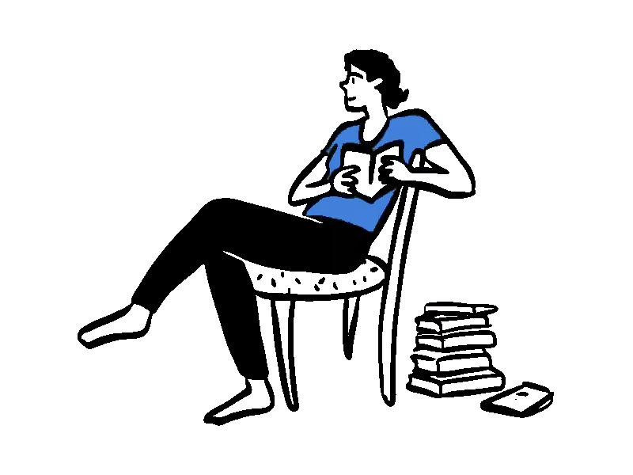
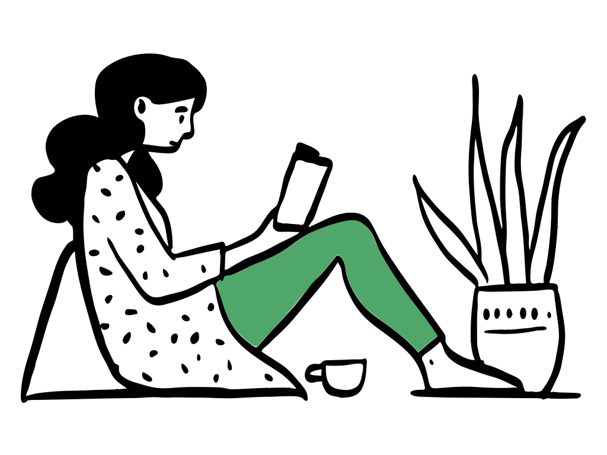
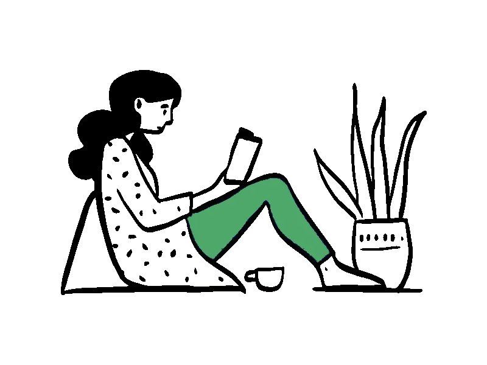

Nhân vật: các cách dựng chuyển động từ SVG gốc
Mỗi ô một cách. Thêm ?rigdebug=8 để xem rig tĩnh với góc 8° (soi mép nối), ?static để tắt hết.
An (nam, ngồi ghế) — yêu cầu: chân đung đưa, ghế lắc qua lại, KHÔNG quay đầu

Bình (nữ) — giữ đầu yên như bản gốc

B2B1 + "line boil" nhẹ.
